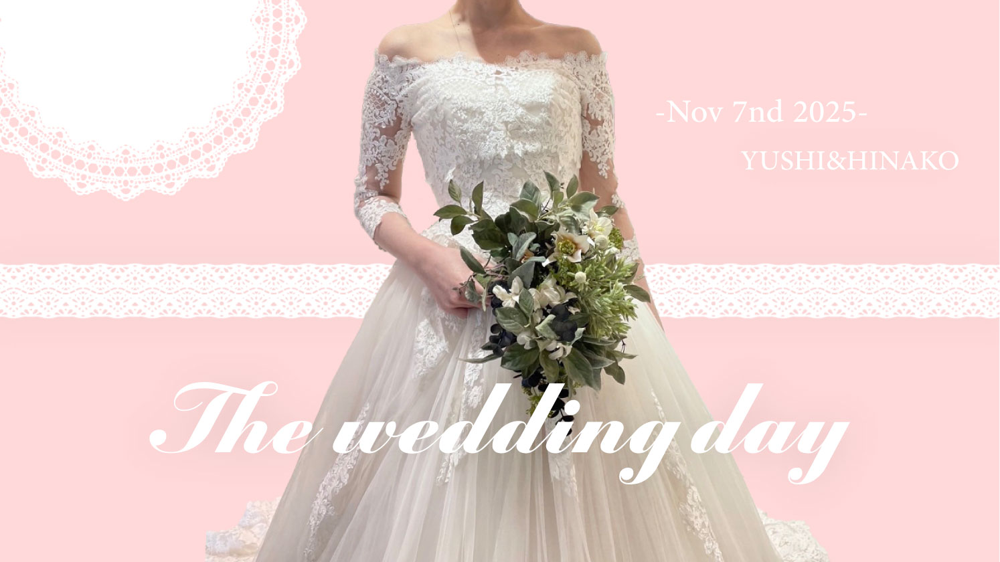

「残しておきたい日」
結婚式Vlog サムネイルデザイン

Overview
- 課題制作 制作全般
- 制作時期：2025年
- 使用ツール：Illustrator Photoshop
Concept
本作品は、結婚式という一日限りの特別な時間をやわらかく記憶に残すことを目的とした、ウェディングビジュアルのデザインです。 淡いピンクを基調に、レースや余白を取り入れることで、上品でやさしい印象の世界観を構成しました。 主役となるドレスの写真を中心に据え、装飾は最小限に抑えることで、華美になりすぎず落ち着いた幸福感が伝わるよう意識しています。 英字のタイポグラフィを用い、招待状のような特別感と少し海外風の雰囲気を加えました。